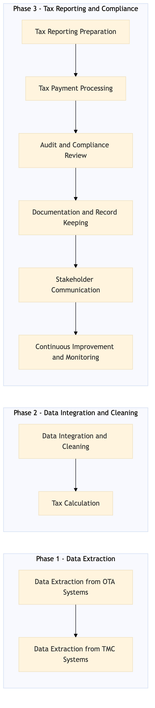

This process document outlines the steps for ensuring tax compliance with GST, VAT, and sales tax across multiple jurisdictions for both OTA and TMC systems.
| Trigger | The initiation of a new financial period or the detection of non-compliance issues in existing data. |
| Outcome | Successful completion of all tax reporting requirements, including accurate calculation and payment of taxes, ensuring compliance with local regulations. |
| Systems | Expedia Open World Partner Central Amadeus NDC Sabre GDS Travelport EVC One Key TravelAds AWS SageMaker Snowflake Kafka Salesforce Tableau Concur T2 Concur Expense Amex GBT Neo/Complete S/4HANA International SOS Cvent Amex Corporate Card VCN Analytics Cloud Workday |

Click to enlarge
| Step | Name & Pain Point | Role | System | Input | Output | KPI | Flags |
|---|---|---|---|---|---|---|---|
| 1.1 | Data Extraction from OTA Systems Data inconsistency across different OTA systems | Finance Analyst | Expedia Open World, Partner Central, Amadeus NDC, Sabre GDS, Travelport, EVC, One Key, TravelAds, AWS SageMaker, Snowflake, Kafka, Salesforce, Tableau | Transaction data from OTA systems | Extracted transaction data | 100% successful extraction rate | ⚠ Exception |
| 1.2 | Data Extraction from TMC Systems Data integration challenges between different TMC systems | Finance Analyst | Concur T2, Concur Expense, Amex GBT Neo/Complete, Amadeus GDS, S/4HANA, International SOS, Cvent, Amex Corporate Card, VCN, Analytics Cloud, Workday | Expense and travel data from TMC systems | Extracted expense and travel data | 100% successful extraction rate | ⚠ Exception |
| 1.3 | Data Integration and Cleaning Handling missing or corrupted data | Data Engineer | Snowflake, Kafka, AWS SageMaker | Extracted transaction and expense data | Cleaned and integrated data | 95% data accuracy rate | ⚠ Exception |
| 1.4 | Tax Calculation Complex tax laws across multiple jurisdictions | Finance Analyst | AWS SageMaker, Tableau | Cleaned and integrated data | Calculated tax amounts | 98% accuracy in tax calculations | ◆ Decision⚠ Exception |
| 1.5 | Tax Reporting Preparation Meeting strict reporting deadlines | Finance Analyst | Tableau, Salesforce | Calculated tax amounts | Prepared tax reports | 100% timely report generation | ⚠ Exception |
| 1.6 | Tax Payment Processing Handling late or failed payments | Finance Officer | S/4HANA, Amex Corporate Card | Prepared tax reports | Processed tax payments | 99% successful payment rate | ◆ Decision⚠ Exception |
| 1.7 | Audit and Compliance Review Ensuring full compliance with local regulations | Compliance Officer | Analytics Cloud, Workday | Processed tax payments | Compliance audit report | 100% compliance rate | ◆ Decision⚠ Exception |
| 1.8 | Documentation and Record Keeping Maintaining up-to-date records | Finance Analyst | Salesforce, Tableau | Compliance audit report | Updated documentation | 100% accurate record keeping | ⚠ Exception |
| 1.9 | Stakeholder Communication Effective communication of tax compliance status | Finance Manager | Salesforce, Email | Updated documentation | Communication with stakeholders | 100% stakeholder satisfaction | ⚠ Exception |
| 1.10 | Continuous Improvement and Monitoring Identifying areas for process improvement | Data Scientist | AWS SageMaker, Tableau | Tax compliance data | Improved tax processes | 20% reduction in non-compliance incidents | ◆ Decision⚠ Exception |